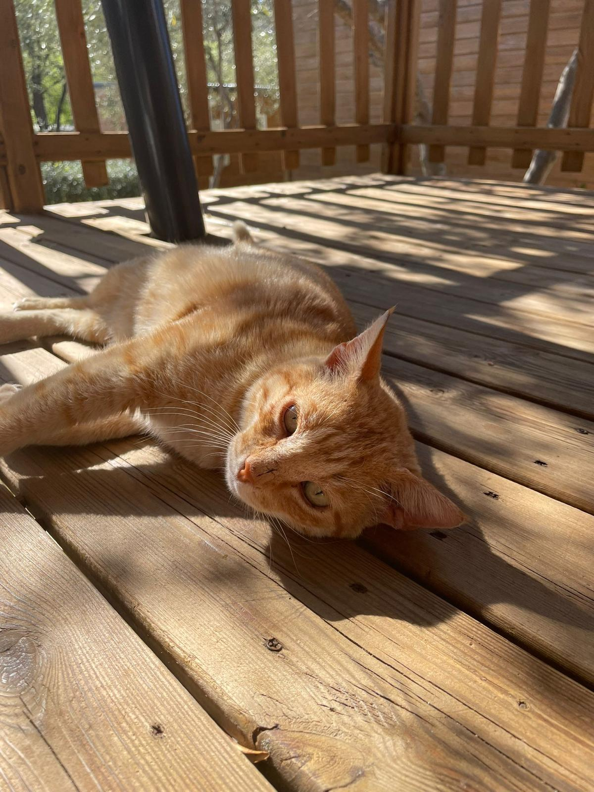
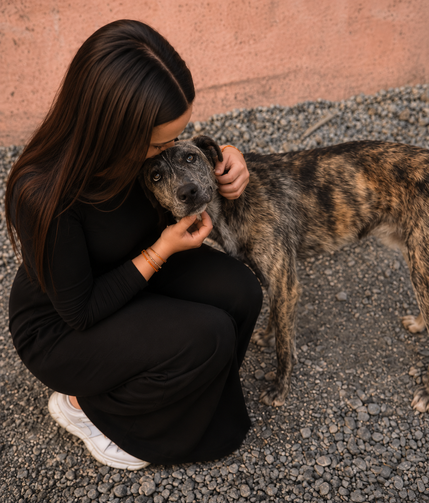

Le matin
Retrouver les petites âmes.
Partir avec de la nourriture, retrouver les animaux croisés la veille et découvrir de nouveaux compagnons.

Un engagement sans frontières
Ils n'ont pas choisi la rue.
Ils n'ont pas choisi la solitude.
Mais nous pouvons choisir de les regarder.
Une expérience pour comprendre
Et si, pendant quelques instants, vous découvriez le monde à travers ses yeux ? Du premier rayon de soleil jusqu'au silence de la nuit, partagez le quotidien d'un chien qui n'a jamais choisi de vivre dans la rue.
01 — Le réveil
Le soleil se lève. Je me réveille là où je me suis endormi, sur les pavés encore froids. Je ne sais pas ce que cette journée me réserve.
00:00 — Une nouvelle journée
Et si demain, son histoire pouvait changer ?
Découvrir comment agir ♡Cette histoire fictive, illustrée par des images générées, représente certaines réalités vécues par les animaux des rues.

Derrière Cœur Errant
Cœur Errant n'est pas né d'un grand projet préparé à l'avance. Il est né de rencontres, de regards et d'une envie profonde d'aider.
En avril 2023, en Corse, je nourrissais chaque jour des chats errants, sans savoir que ces petits gestes allaient devenir le début d'une aventure.
En juin 2024, à Tanger, j'ai compris que je voulais donner un autre sens à mes voyages. Je voulais continuer à découvrir le monde, mais aussi venir en aide aux animaux que j'y rencontrerais.
Cœur Errant est aujourd'hui un engagement personnel. Ce n'est ni une ONG ni une association. C'est une volonté de faire ce que je peux, avec mes propres moyens, et de ne jamais oublier ceux que l'on ne regarde plus.
Je ne pourrai pas changer le monde entier. Mais je peux essayer de changer un petit morceau du leur.Découvrir le chemin parcouru ↗
Ce qui guide chacun de mes pas
Découvrez les valeurs qui donnent tout son sens à Cœur Errant.
Chaque animal mérite d'être considéré comme un être vivant à part entière. Qu'il ait un foyer ou non, sa vie possède la même valeur. La dignité n'a pas de frontières.
Nourrir, apporter de l'eau, chercher de l'aide, contacter un vétérinaire lorsque nécessaire. Je crois aux gestes concrets, même lorsqu'ils sont modestes.
Photographier, raconter et partager les histoires des animaux errants. Leur donner une visibilité, c'est aussi rappeler au monde qu'ils existent et qu'ils comptent.
Pendant mes voyages, je consacre une partie de mon budget à la nourriture et aux soins des animaux. Un souvenir matériel peut attendre. Un animal qui a faim n'a pas toujours cette possibilité.
Cœur Errant n'est pas une action ponctuelle. C'est un engagement que je souhaite poursuivre au fil des années, des voyages et des rencontres.
Personne ne peut sauver tous les animaux seul. Les associations locales, les vétérinaires, les bénévoles et les personnes bienveillantes ont tous un rôle à jouer. Ensemble, nous pouvons aller plus loin.
Voyager autrement
Mes voyages sont devenus une manière de découvrir le monde autrement. Voici à quoi peut ressembler une journée avec Cœur Errant.
Le matin
Partir avec de la nourriture, retrouver les animaux croisés la veille et découvrir de nouveaux compagnons.
La journée
Garder les yeux ouverts pendant mes promenades. M'arrêter lorsqu'un animal a besoin d'aide et chercher une solution adaptée à sa situation.
Le soir
Lorsque cela est possible, retourner dans les mêmes rues. Offrir un repas, un peu de présence et parfois retrouver un regard familier.
La nuit
Rassembler mes photographies, mes souvenirs et mes témoignages. Les partager pour que ces petites vies ne restent pas invisibles.
Bien plus que des rencontres
La confiance ne se réclame pas. Elle se mérite, avec du temps, de la patience et de la douceur.
La confianceÀ votre tour
Vous n'avez pas besoin de voyager à l'autre bout du monde pour faire une différence. Tout peut commencer là où vous êtes.
Cliquez sur l'empreinte pour symboliser votre engagement à regarder les animaux avec bienveillance.
Je promets de ne pas détourner systématiquement le regard.
De respecter chaque animal, de lui venir en aide lorsque je le peux et de me souvenir que sa vie compte.
Une empreinte de cœur. ♡Un engagement symbolique et personnel, sans inscription ni collecte de données personnelles. Votre empreinte reste visible pendant cette visite, sans être enregistrée dans votre navigateur.
Ensemble, un peu plus loin
Je ne sais pas combien de petites âmes croiseront encore mon chemin. Mais je sais que chacune d'elles mérite d'être regardée.
Et si nous étions un peu plus nombreux à faire attention à elles ?
Cœur Errant — Chaque animal a une histoire.